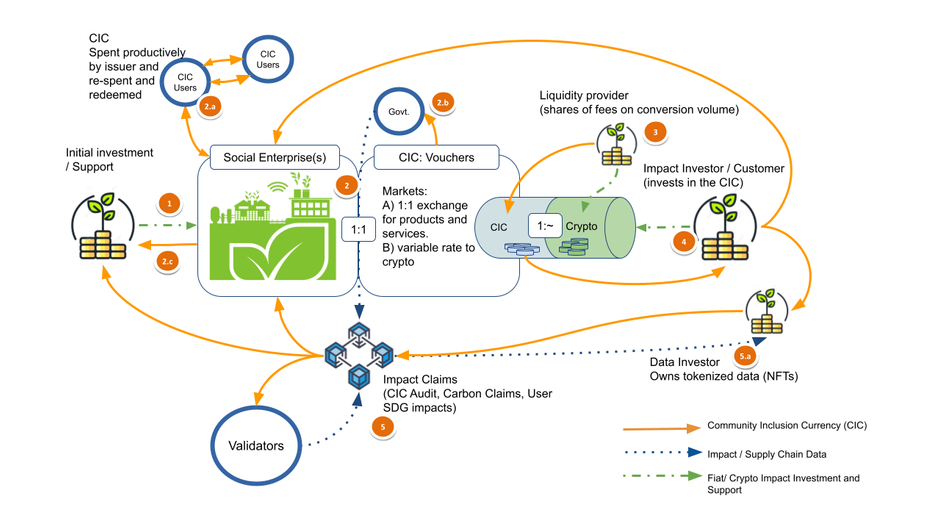

Impact Investment and Community Currencies
Communities creating their own medium of exchange has began to enter the humanitarian space yet impact investors especially in the cryptocurrency and Environmental, Social, and Governance (ESG) space have just begun to look into Community Currencies as a way to invest in sustainable development.
In their basic form the Community Inclusion Currencies we support are simply vouchers against the production of goods and services.

But when incorporated into an aid and impact investment framework CICs, created by social enterprises (#2 below), begin to take on new shapes:
Impact Investment Stages
Initial Investment: An investor/supporter agrees to support a social enterprise in return for a share of their tokenized production claims. (Community Inclusion Currencies (CICs) created in step 2 (but could have already started))
CIC Issuance: The Social Enterprise issues a token (CIC) against their future production - valued in national currency. e.g. 1000 Shillings worth of recycled paper products. CICs are a way for a social enterprise to take out a zero interest loan against future production.
- CIC are used to pay for labour, suppliers, marketing and redeemable for goods and services. They enter general circulation and can be re-traded and taxed.
- CICs are subject to an gradual expiration in the form of an automatic holding tax that can be offered to local government to ensure that the 1:1 peg of CIC to products and services is held stable and valued in national currency.
- The investor receives back a portion of these CICs
Liquidity Provision: An investor or anyone holding both CIC and some other crypto, creates a liquidity pool (a contract like Uniswap that holds the CIC and some other crypto like USDC) and charges fees on conversion between the two. Note that the liquidity pool will have a variable exchange rate depending on the amount of CIC and other crypto in the pool.
Impact Investment: An investor can now add more crypto to the pool in order to invest in the Social Enterprise's production - pulling out some CIC and also making CIC more valuable in the pool (dynamic exchange rate). When CIC holders (like the Social Enterprise) convert/liquidate their CIC to crypto using the pool, they will then reduce the exchange rate. The investor or a customer of the social enterprise can inject crypto to get the CIC cheaply in order to buy products 1:1 (Beneficial arbitrage stabilizes the exchange rate).
Impact Claim Investments: Data from CIC usage, users and validators is collected and packaged into a NFT Impact Claims. These can represent all kinds of SDG impacts, carbon offsets, and audits against the value of the CIC itself.
- Anyone holding CICs can access / support these NFTs. Note that CIC payments on such a data marketplace can be divided automatically back to the community, investors and validators.
The above design goes back to our work on bonding curves stretching back to 2018 and incorporates Impact claims and more general liquidity pools. We are looking forward to implementing these Community Inclusion Currency models in the following year with investment groups like Nukkleus
Can we enable social enterprises and communities to issue credit against their production and develop local currency systems that can be connected, supported and invested in? We're excited to iterate on these models and create something that is usable across the world.